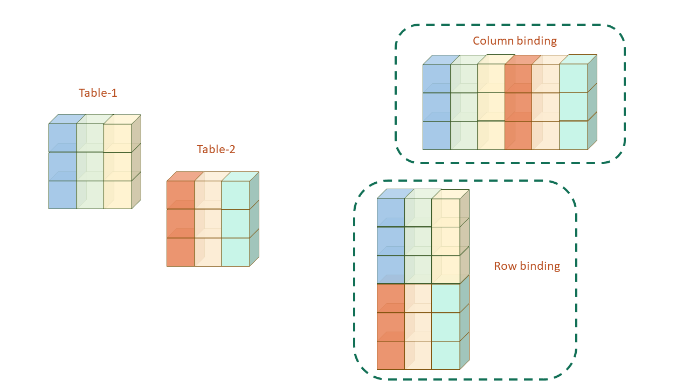
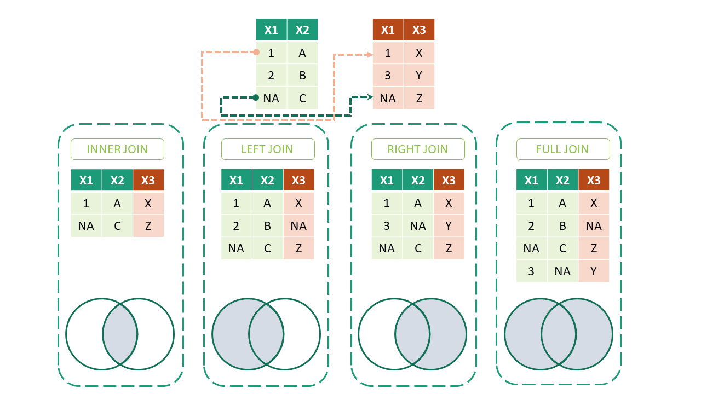

14 Joining Tables
In real audit work, there is hardly ever a single table to analyse. A district treasury may send one payment file for each district. The payment register carries only a vendor code, while the vendor’s name and bank account sit in a separate vendor master. The rates of a supply contract sit in yet another table, revised from time to time. To audit the payments, we must first put these tables together.
Many of the most useful audit tests are, in fact, joins. Was any payment made to a vendor who is not in the approved list? Did an employee draw pay after retirement? Was a bill charged at a rate other than the one in force on its date? Did an officer claim travelling allowance for days on which he was on leave? Each question compares one table with another, record by record. R does this for every record in seconds.
In this chapter we learn three kinds of joins.
- Simple joins, which stack tables one below the other, or place them side by side.
- Relational joins, which match the records of two tables on a key, like a vendor code.
- Filtering joins, which keep or drop records of one table depending on whether they have a match in another.
We then go beyond exact matches, to joins on dates and ranges. These find the rate in force on a date, or periods which clash. Along the way, we learn the checks that stop a join from quietly adding or losing money.
Prerequisites
14.1 Our data, payment files of three districts
Let us take the payments made by a department in June 2024. Each of its three district offices, Amarpur, Belapur and Chandpur, has sent a separate file of vouchers. Each voucher carries a vendor code. The department also keeps a vendor master with the name of each approved vendor. The code below creates these tables. Two irregularities are planted in them, and we will find both with joins.
Code to create the payment files and the vendor master
pay_amarpur <- tibble(
voucher_no = c("AMR-0141", "AMR-0142", "AMR-0143", "AMR-0144"),
voucher_date = as.Date(c("2024-06-04", "2024-06-11", "2024-06-19", "2024-06-27")),
vendor_code = c("V101", "V102", "V101", "V104"),
amount = c(184500, 62000, 97250, 145800)
)
pay_belapur <- tibble(
voucher_no = c("BLP-0207", "BLP-0208", "BLP-0209", "BLP-0210"),
voucher_date = as.Date(c("2024-06-03", "2024-06-12", "2024-06-20", "2024-06-28")),
vendor_code = c("V103", "V102", "V109", "V105"), # Planted. V109 is not in the master
amount = c(76400, 238000, 312500, 54900)
)
pay_chandpur <- tibble(
voucher_no = c("CHD-0088", "CHD-0089", "CHD-0090"),
voucher_date = as.Date(c("2024-06-07", "2024-06-17", "2024-06-25")),
vendor_code = c("V104", "V103", "V105"),
amount = c(128000, 43750, 89600)
)
# Planted. V106 is in the master but has received no payment
vendors <- tibble(
vendor_code = c("V101", "V102", "V103", "V104", "V105", "V106"),
vendor_name = c("Sharma Traders", "Gupta Stationers", "Ansari Electricals",
"Patil Construction Co.", "Devi Enterprises", "Rao Medical Agencies")
)pay_amarpur# A tibble: 4 × 4
voucher_no voucher_date vendor_code amount
<chr> <date> <chr> <dbl>
1 AMR-0141 2024-06-04 V101 184500
2 AMR-0142 2024-06-11 V102 62000
3 AMR-0143 2024-06-19 V101 97250
4 AMR-0144 2024-06-27 V104 145800pay_belapur# A tibble: 4 × 4
voucher_no voucher_date vendor_code amount
<chr> <date> <chr> <dbl>
1 BLP-0207 2024-06-03 V103 76400
2 BLP-0208 2024-06-12 V102 238000
3 BLP-0209 2024-06-20 V109 312500
4 BLP-0210 2024-06-28 V105 54900pay_chandpur# A tibble: 3 × 4
voucher_no voucher_date vendor_code amount
<chr> <date> <chr> <dbl>
1 CHD-0088 2024-06-07 V104 128000
2 CHD-0089 2024-06-17 V103 43750
3 CHD-0090 2024-06-25 V105 89600vendors# A tibble: 6 × 2
vendor_code vendor_name
<chr> <chr>
1 V101 Sharma Traders
2 V102 Gupta Stationers
3 V103 Ansari Electricals
4 V104 Patil Construction Co.
5 V105 Devi Enterprises
6 V106 Rao Medical Agencies 14.2 Simple joins or concatenation
Tables are often split into smaller tables, which have to be put back together before any analysis. The split may be by rows. For example, there may be a separate file for each district or each month, all with the same columns. Or the split may be by columns. For example, a system may export some fields of a register in one file and the rest in another. Figure 14.1 shows the two cases.

14.2.1 Column binding
Data frames behave like matrices in many ways, except that their columns may be of different types. Base R joins matrices with cbind() and rbind(). In the tidyverse, dplyr has two similar functions, bind_cols() and bind_rows(), which are safer and easier to use. The syntax of bind_cols(), which places tables side by side, is shown below.
bind_cols(
...,
.name_repair = c("unique", "universal", "check_unique")
)The arguments are these.
-
...are the data frames to be combined. -
.name_repairchooses how to rename columns with duplicate names, if any.
Suppose the Amarpur office could export its voucher register only in two parts. The first part has the voucher dates. The second part has the amounts. Both parts carry the voucher number, in the same order.
New names:
• `voucher_no` -> `voucher_no...1`
• `voucher_no` -> `voucher_no...3`register# A tibble: 4 × 4
voucher_no...1 voucher_date voucher_no...3 amount
<chr> <date> <chr> <dbl>
1 AMR-0141 2024-06-04 AMR-0141 184500
2 AMR-0142 2024-06-11 AMR-0142 62000
3 AMR-0143 2024-06-19 AMR-0143 97250
4 AMR-0144 2024-06-27 AMR-0144 145800Both parts had a column voucher_no, so .name_repair renamed them voucher_no...1 and voucher_no...3, after their positions. This is useful. Before dropping one of them, we can check that the two parts really were in the same order.
register |> filter(voucher_no...1 != voucher_no...3)# A tibble: 0 × 4
# ℹ 4 variables: voucher_no...1 <chr>, voucher_date <date>,
# voucher_no...3 <chr>, amount <dbl>No row differs, so the parts line up.
Note
The data frames to be placed side by side must have the same number of rows. Try bind_cols(part_a, part_b[1:3, ]) and see the error. bind_cols() matches rows only by their position, never by a key. If one part was sorted differently, the result would be wrong without any error. That is why we checked the voucher numbers above.
14.2.2 Row binding
The syntax of bind_rows(), which places tables one below the other, is shown below.
bind_rows(..., .id = NULL)The arguments are these.
-
...are the data frames to be combined. -
.idcreates a new column which tells which table each row came from.
Let us put the three district files together.
bind_rows(pay_amarpur, pay_belapur, pay_chandpur, .id = "file")# A tibble: 11 × 5
file voucher_no voucher_date vendor_code amount
<chr> <chr> <date> <chr> <dbl>
1 1 AMR-0141 2024-06-04 V101 184500
2 1 AMR-0142 2024-06-11 V102 62000
3 1 AMR-0143 2024-06-19 V101 97250
4 1 AMR-0144 2024-06-27 V104 145800
5 2 BLP-0207 2024-06-03 V103 76400
6 2 BLP-0208 2024-06-12 V102 238000
7 2 BLP-0209 2024-06-20 V109 312500
8 2 BLP-0210 2024-06-28 V105 54900
9 3 CHD-0088 2024-06-07 V104 128000
10 3 CHD-0089 2024-06-17 V103 43750
11 3 CHD-0090 2024-06-25 V105 89600The column file shows 1, 2 and 3, the positions of the tables. To get the district names instead, we put the tables in a named list. .id then takes the names of the list elements as its values.
# A tibble: 11 × 5
district voucher_no voucher_date vendor_code amount
<chr> <chr> <date> <chr> <dbl>
1 Amarpur AMR-0141 2024-06-04 V101 184500
2 Amarpur AMR-0142 2024-06-11 V102 62000
3 Amarpur AMR-0143 2024-06-19 V101 97250
4 Amarpur AMR-0144 2024-06-27 V104 145800
5 Belapur BLP-0207 2024-06-03 V103 76400
6 Belapur BLP-0208 2024-06-12 V102 238000
7 Belapur BLP-0209 2024-06-20 V109 312500
8 Belapur BLP-0210 2024-06-28 V105 54900
9 Chandpur CHD-0088 2024-06-07 V104 128000
10 Chandpur CHD-0089 2024-06-17 V103 43750
11 Chandpur CHD-0090 2024-06-25 V105 89600Columns are matched by their names, not their positions. If a column is missing in one file, its rows get NA in that column. Let us check that nothing was lost. The three files had 4, 4 and 3 vouchers, and the combined table has 11. The total paid is ₹14.33 lakh.
14.3 Relational joins
Relational joins combine tables on the basis of keys. A key is a column which identifies a record, like a vendor code or an employee number. A primary key identifies each row of a table uniquely, like vendor_code in the vendor master. A foreign key in another table refers to it, like vendor_code in the payments. A key may match one row in each table (one-to-one), or one row in the master and many rows in the transactions (one-to-many).
Joins of this kind are either inner joins or outer joins. Figure 14.2 shows them. The columns of the right table are added to the left table. For this reason, these four joins are also called mutating joins.

The syntax of all four joins is nearly the same.
*_join(x, y, by = NULL, copy = FALSE, suffix = c('.x', '.y'), ... , keep = FALSE)The arguments are these.
-
xandyare the data frames to be joined. -
bygives the key column or columns, as a character vector or withjoin_by(), which we will see shortly. -
suffixgives the suffixes added to column names which occur in both tables. -
keepdecides whether the key columns of bothxandyare kept in the output.
Let us take each join in turn, joining the payments to the vendor master.
14.3.1 Inner joins
An inner join keeps only those rows whose key is present in both tables.
inner_join(payments, vendors)Joining with `by = join_by(vendor_code)`# A tibble: 10 × 6
district voucher_no voucher_date vendor_code amount vendor_name
<chr> <chr> <date> <chr> <dbl> <chr>
1 Amarpur AMR-0141 2024-06-04 V101 184500 Sharma Traders
2 Amarpur AMR-0142 2024-06-11 V102 62000 Gupta Stationers
3 Amarpur AMR-0143 2024-06-19 V101 97250 Sharma Traders
4 Amarpur AMR-0144 2024-06-27 V104 145800 Patil Construction Co.
5 Belapur BLP-0207 2024-06-03 V103 76400 Ansari Electricals
6 Belapur BLP-0208 2024-06-12 V102 238000 Gupta Stationers
7 Belapur BLP-0210 2024-06-28 V105 54900 Devi Enterprises
8 Chandpur CHD-0088 2024-06-07 V104 128000 Patil Construction Co.
9 Chandpur CHD-0089 2024-06-17 V103 43750 Ansari Electricals
10 Chandpur CHD-0090 2024-06-25 V105 89600 Devi Enterprises Only 10 of the 11 payments are left. The payment to vendor V109 has disappeared, because V109 is not in the master. An inner join drops such rows without any warning. Here, ₹3.125 lakh has silently gone missing from the total.
14.3.2 Left joins
A left join keeps every row of the first table, x, whether or not its key is found in the second table. This is the join we use most in audit. It brings the details of the master into the transactions, without losing any transaction.
left_join(payments, vendors)Joining with `by = join_by(vendor_code)`# A tibble: 11 × 6
district voucher_no voucher_date vendor_code amount vendor_name
<chr> <chr> <date> <chr> <dbl> <chr>
1 Amarpur AMR-0141 2024-06-04 V101 184500 Sharma Traders
2 Amarpur AMR-0142 2024-06-11 V102 62000 Gupta Stationers
3 Amarpur AMR-0143 2024-06-19 V101 97250 Sharma Traders
4 Amarpur AMR-0144 2024-06-27 V104 145800 Patil Construction Co.
5 Belapur BLP-0207 2024-06-03 V103 76400 Ansari Electricals
6 Belapur BLP-0208 2024-06-12 V102 238000 Gupta Stationers
7 Belapur BLP-0209 2024-06-20 V109 312500 <NA>
8 Belapur BLP-0210 2024-06-28 V105 54900 Devi Enterprises
9 Chandpur CHD-0088 2024-06-07 V104 128000 Patil Construction Co.
10 Chandpur CHD-0089 2024-06-17 V103 43750 Ansari Electricals
11 Chandpur CHD-0090 2024-06-25 V105 89600 Devi Enterprises All 11 payments are kept. The payment to V109 has NA for the vendor name, which tells us at once that the vendor is not in the master.
14.3.3 Right joins
A right join is the mirror image of a left join. It keeps every row of the second table, y, whether or not its key is found in the first table.
right_join(payments, vendors)Joining with `by = join_by(vendor_code)`# A tibble: 11 × 6
district voucher_no voucher_date vendor_code amount vendor_name
<chr> <chr> <date> <chr> <dbl> <chr>
1 Amarpur AMR-0141 2024-06-04 V101 184500 Sharma Traders
2 Amarpur AMR-0142 2024-06-11 V102 62000 Gupta Stationers
3 Amarpur AMR-0143 2024-06-19 V101 97250 Sharma Traders
4 Amarpur AMR-0144 2024-06-27 V104 145800 Patil Construction Co.
5 Belapur BLP-0207 2024-06-03 V103 76400 Ansari Electricals
6 Belapur BLP-0208 2024-06-12 V102 238000 Gupta Stationers
7 Belapur BLP-0210 2024-06-28 V105 54900 Devi Enterprises
8 Chandpur CHD-0088 2024-06-07 V104 128000 Patil Construction Co.
9 Chandpur CHD-0089 2024-06-17 V103 43750 Ansari Electricals
10 Chandpur CHD-0090 2024-06-25 V105 89600 Devi Enterprises
11 <NA> <NA> NA V106 NA Rao Medical Agencies Vendor V106 appears at the end with NA in every payment column. It is in the master, but no payment was made to it in June. The payment to V109 is dropped, since V109 is not in y.
14.3.4 Full joins
A full join keeps every row of both tables, whether or not the key is found in the other.
full_join(payments, vendors)Joining with `by = join_by(vendor_code)`# A tibble: 12 × 6
district voucher_no voucher_date vendor_code amount vendor_name
<chr> <chr> <date> <chr> <dbl> <chr>
1 Amarpur AMR-0141 2024-06-04 V101 184500 Sharma Traders
2 Amarpur AMR-0142 2024-06-11 V102 62000 Gupta Stationers
3 Amarpur AMR-0143 2024-06-19 V101 97250 Sharma Traders
4 Amarpur AMR-0144 2024-06-27 V104 145800 Patil Construction Co.
5 Belapur BLP-0207 2024-06-03 V103 76400 Ansari Electricals
6 Belapur BLP-0208 2024-06-12 V102 238000 Gupta Stationers
7 Belapur BLP-0209 2024-06-20 V109 312500 <NA>
8 Belapur BLP-0210 2024-06-28 V105 54900 Devi Enterprises
9 Chandpur CHD-0088 2024-06-07 V104 128000 Patil Construction Co.
10 Chandpur CHD-0089 2024-06-17 V103 43750 Ansari Electricals
11 Chandpur CHD-0090 2024-06-25 V105 89600 Devi Enterprises
12 <NA> <NA> NA V106 NA Rao Medical Agencies Both exceptions are now visible together, V109 with no name and V106 with no payment.
Each of the joins above printed a message, Joining with by = join_by(vendor_code). When by is not given, dplyr joins on all the columns with the same names in both tables, and tells us which ones it used.
WarningCaution
It is safer to always give the key yourself, like by = "vendor_code". Then the join does not silently change if a column with a common name, like district or amount, is later added to both tables.
The key columns may have different names in the two tables. Suppose the vendor master came from another system, which calls the vendor code supplier_id. The by argument handles this too.
vendors_ifms <- vendors |> rename(supplier_id = vendor_code)
vendors_ifms# A tibble: 6 × 2
supplier_id vendor_name
<chr> <chr>
1 V101 Sharma Traders
2 V102 Gupta Stationers
3 V103 Ansari Electricals
4 V104 Patil Construction Co.
5 V105 Devi Enterprises
6 V106 Rao Medical Agencies # A tibble: 11 × 6
district voucher_no voucher_date vendor_code amount vendor_name
<chr> <chr> <date> <chr> <dbl> <chr>
1 Amarpur AMR-0141 2024-06-04 V101 184500 Sharma Traders
2 Amarpur AMR-0142 2024-06-11 V102 62000 Gupta Stationers
3 Amarpur AMR-0143 2024-06-19 V101 97250 Sharma Traders
4 Amarpur AMR-0144 2024-06-27 V104 145800 Patil Construction Co.
5 Belapur BLP-0207 2024-06-03 V103 76400 Ansari Electricals
6 Belapur BLP-0208 2024-06-12 V102 238000 Gupta Stationers
7 Belapur BLP-0209 2024-06-20 V109 312500 <NA>
8 Belapur BLP-0210 2024-06-28 V105 54900 Devi Enterprises
9 Chandpur CHD-0088 2024-06-07 V104 128000 Patil Construction Co.
10 Chandpur CHD-0089 2024-06-17 V103 43750 Ansari Electricals
11 Chandpur CHD-0090 2024-06-25 V105 89600 Devi Enterprises
Note
Every *_join() can match on more than one key column, through the same by argument. For example, by = c("district", "vendor_code") matches only when both the district and the vendor code agree.
Many-to-many joins
If a key value appears more than once in both tables, every copy in one table is matched with every copy in the other. Such many-to-many joins multiply rows, and need great care. Suppose the department also keeps a table of vendors’ bank accounts. Vendor V101 changed its bank, and its old account was never removed.
# A tibble: 6 × 2
vendor_code account_no
<chr> <chr>
1 V101 30412256781
2 V101 50100234917
3 V102 20417793320
4 V103 11203345671
5 V104 38810027764
6 V105 60219934408pay_banks <- payments |> left_join(vendor_banks, by = "vendor_code")Warning in left_join(payments, vendor_banks, by = "vendor_code"): Detected an unexpected many-to-many relationship between `x` and `y`.
ℹ Row 1 of `x` matches multiple rows in `y`.
ℹ Row 1 of `y` matches multiple rows in `x`.
ℹ If a many-to-many relationship is expected, set `relationship =
"many-to-many"` to silence this warning.pay_banks |> filter(vendor_code == "V101")# A tibble: 4 × 6
district voucher_no voucher_date vendor_code amount account_no
<chr> <chr> <date> <chr> <dbl> <chr>
1 Amarpur AMR-0141 2024-06-04 V101 184500 30412256781
2 Amarpur AMR-0141 2024-06-04 V101 184500 50100234917
3 Amarpur AMR-0143 2024-06-19 V101 97250 30412256781
4 Amarpur AMR-0143 2024-06-19 V101 97250 50100234917V101 was paid twice, and it has two accounts. So each of its two payments now appears twice, once against each account. The table has grown from 11 rows to 13, and the total from ₹14.3 lakh to ₹17.1 lakh.
dplyr warns us about the many-to-many relationship. We can also state the relationship we expect with the argument relationship. If the data does not fit, the join stops with an error, which is exactly what we want. The argument takes one of these values.
-
NULL(default) "one-to-one""one-to-many""many-to-one""many-to-many"
If we really do want every combination, we say so, and the warning goes.
[1] 13Here we do not. Each payment should go to one account, so the right answer is to clean the bank master first. The duplicate itself is a finding. A payment may have gone to the closed account.
Missing keys, a common trap
Let us see how a missing key can inflate a total. In a register of cheques, two payments have no vendor code. The vendor list also has two entries without a code.
cheques <- tibble(cheque_no = sprintf("CHQ-%02d", 1:5),
vendor_code = c("V101", "V102", NA, NA, "V103"),
amount = c(100000, 200000, 300000, 400000, 500000))
vendor_list <- tibble(vendor_code = c("V101", "V102", NA, NA),
vendor_name = c("Sharma Traders", "Gupta Stationers",
"Unregistered-1", "Unregistered-2"))
joined <- cheques |> left_join(vendor_list, by = "vendor_code")Warning in left_join(cheques, vendor_list, by = "vendor_code"): Detected an unexpected many-to-many relationship between `x` and `y`.
ℹ Row 3 of `x` matches multiple rows in `y`.
ℹ Row 3 of `y` matches multiple rows in `x`.
ℹ If a many-to-many relationship is expected, set `relationship =
"many-to-many"` to silence this warning.joined# A tibble: 7 × 4
cheque_no vendor_code amount vendor_name
<chr> <chr> <dbl> <chr>
1 CHQ-01 V101 100000 Sharma Traders
2 CHQ-02 V102 200000 Gupta Stationers
3 CHQ-03 <NA> 300000 Unregistered-1
4 CHQ-03 <NA> 300000 Unregistered-2
5 CHQ-04 <NA> 400000 Unregistered-1
6 CHQ-04 <NA> 400000 Unregistered-2
7 CHQ-05 V103 500000 <NA> rows_before rows_after
5 7 total_before total_after
1500000 2200000 Five cheques worth ₹15 lakh have become 7 rows, totalling ₹22 lakh. By default, dplyr treats a missing key as matching another missing key. So each cheque without a vendor code was matched with both vendors without a code. The argument na_matches = "never" stops missing keys from matching each other.
cheques |> left_join(vendor_list, by = "vendor_code", na_matches = "never")# A tibble: 5 × 4
cheque_no vendor_code amount vendor_name
<chr> <chr> <dbl> <chr>
1 CHQ-01 V101 100000 Sharma Traders
2 CHQ-02 V102 200000 Gupta Stationers
3 CHQ-03 <NA> 300000 <NA>
4 CHQ-04 <NA> 400000 <NA>
5 CHQ-05 V103 500000 <NA> Even better, state that each cheque should match at most one vendor. Then dplyr stops, instead of quietly adding rows.
cheques |> left_join(vendor_list, by = "vendor_code", relationship = "many-to-one")Error in `left_join()`:
! Each row in `x` must match at most 1 row in `y`.
ℹ Row 3 of `x` matches multiple rows in `y`.
TipAudit tip
After every join, compare the number of rows and the totals before and after, as we did above. A left join on a proper key should never change them. If the rows increase, the key is not unique in the second table, or missing keys are matching each other. Use relationship to make dplyr check this for you, and na_matches = "never" for keys which may be missing.
14.4 Filtering joins
The other joins in dplyr are filtering joins. They do not add any column from the right table. They only use the keys of the right table to decide which rows of the left table to keep.
14.4.1 Semi joins
semi_join() keeps the rows of the left table which have a match in the right table. Let us keep the payments made to vendors in the approved master.
payments |> semi_join(vendors, by = "vendor_code")# A tibble: 10 × 5
district voucher_no voucher_date vendor_code amount
<chr> <chr> <date> <chr> <dbl>
1 Amarpur AMR-0141 2024-06-04 V101 184500
2 Amarpur AMR-0142 2024-06-11 V102 62000
3 Amarpur AMR-0143 2024-06-19 V101 97250
4 Amarpur AMR-0144 2024-06-27 V104 145800
5 Belapur BLP-0207 2024-06-03 V103 76400
6 Belapur BLP-0208 2024-06-12 V102 238000
7 Belapur BLP-0210 2024-06-28 V105 54900
8 Chandpur CHD-0088 2024-06-07 V104 128000
9 Chandpur CHD-0089 2024-06-17 V103 43750
10 Chandpur CHD-0090 2024-06-25 V105 89600The result has the columns of payments only. Unlike an inner join, a semi join never repeats a row, even if the key occurs many times in the right table.
14.4.2 Anti joins
anti_join() is the opposite of semi_join(). It keeps only those rows of the left table which have no match in the right table. These are the payments to vendors who are not in the approved master.
payments |> anti_join(vendors, by = "vendor_code")# A tibble: 1 × 5
district voucher_no voucher_date vendor_code amount
<chr> <chr> <date> <chr> <dbl>
1 Belapur BLP-0209 2024-06-20 V109 312500The planted payment is found. Voucher BLP-0209 of Belapur paid ₹3.125 lakh to vendor V109, which is not in the master. Turning the tables around finds the vendors in the master who received nothing.
vendors |> anti_join(payments, by = "vendor_code")# A tibble: 1 × 2
vendor_code vendor_name
<chr> <chr>
1 V106 Rao Medical AgenciesA vendor code which is never used is not wrong in itself. But dormant codes are a known risk, since a payment can be routed through them unnoticed. The auditor may ask why V106 is still active.
Anti joins are the backbone of completeness and validity tests in audit. Some more examples follow.
- Beneficiaries paid, but not in the list of eligible beneficiaries.
- Items issued from the store, but never received into it.
- Employees in the pay bill, but not in the sanctioned strength.
Each row returned is an exception to be explained.
14.5 Relational, but non-equi joins
So far, we have given the keys as character strings. Since dplyr version 1.1.0, released in January 2023, there is a helper function join_by(). It describes how two tables are to be joined, in a small language of its own. The result is supplied as the by argument of any of the join functions above. For the equality joins we have already learnt, join_by() brings two small changes.
- We write the column names directly, without quotes.
- We use
==, the equality operator, instead of=.
So our join with the vendor master from the other system becomes this.
# A tibble: 11 × 6
district voucher_no voucher_date vendor_code amount vendor_name
<chr> <chr> <date> <chr> <dbl> <chr>
1 Amarpur AMR-0141 2024-06-04 V101 184500 Sharma Traders
2 Amarpur AMR-0142 2024-06-11 V102 62000 Gupta Stationers
3 Amarpur AMR-0143 2024-06-19 V101 97250 Sharma Traders
4 Amarpur AMR-0144 2024-06-27 V104 145800 Patil Construction Co.
5 Belapur BLP-0207 2024-06-03 V103 76400 Ansari Electricals
6 Belapur BLP-0208 2024-06-12 V102 238000 Gupta Stationers
7 Belapur BLP-0209 2024-06-20 V109 312500 <NA>
8 Belapur BLP-0210 2024-06-28 V105 54900 Devi Enterprises
9 Chandpur CHD-0088 2024-06-07 V104 128000 Patil Construction Co.
10 Chandpur CHD-0089 2024-06-17 V103 43750 Ansari Electricals
11 Chandpur CHD-0090 2024-06-25 V105 89600 Devi Enterprises It reads naturally. But the real power of join_by() is that it can join tables on inequalities too.
14.5.1 Inequality joins
An inequality join matches on >, >=, < or <=. To construct one with join_by(), we give two column names separated by one of these signs.
Let us take dearness allowance (DA), which is revised every six months. The table below holds a simplified set of DA rates with the date from which each took effect. The second table has the month of each pay bill of an office. To check a pay bill, we need the DA rate in force in its month.
# A tibble: 4 × 2
effective_from da_pct
<date> <dbl>
1 2023-01-01 42
2 2023-07-01 46
3 2024-01-01 50
4 2024-07-01 53# A tibble: 15 × 3
bill_month effective_from da_pct
<date> <date> <dbl>
1 2022-12-01 NA NA
2 2023-05-01 2023-01-01 42
3 2023-10-01 2023-01-01 42
4 2023-10-01 2023-07-01 46
5 2024-03-01 2023-01-01 42
6 2024-03-01 2023-07-01 46
7 2024-03-01 2024-01-01 50
8 2024-09-01 2023-01-01 42
9 2024-09-01 2023-07-01 46
10 2024-09-01 2024-01-01 50
11 2024-09-01 2024-07-01 53
12 2025-02-01 2023-01-01 42
13 2025-02-01 2023-07-01 46
14 2025-02-01 2024-01-01 50
15 2025-02-01 2024-07-01 53We got results, but too many of them. Each bill has been matched with every revision made on or before its month. The bill of February 2025 appears four times, with four different rates. What we want is only the latest revision on or before the bill month. For this, we have rolling joins.
14.5.2 Rolling joins
Rolling joins are a variant of inequality joins which keep only the closest match. To construct a rolling join, we wrap the inequality in closest().
# A tibble: 6 × 3
bill_month effective_from da_pct
<date> <date> <dbl>
1 2022-12-01 NA NA
2 2023-05-01 2023-01-01 42
3 2023-10-01 2023-07-01 46
4 2024-03-01 2024-01-01 50
5 2024-09-01 2024-07-01 53
6 2025-02-01 2024-07-01 53Each bill now gets exactly one rate, the one in force in its month. The bill of December 2022 gets NA, since our table has no rate before January 2023. In a real check, such a row tells us that the rate table does not go back far enough. The same join can carry an equality key as well, like an item code, as we will see in Section 14.6.
14.5.3 Overlap joins
Overlap joins are a special case of inequality joins. They compare a period in one table with a period in another. join_by() has three helpers for them, each a short form of simpler inequalities.
-
between(x, y_lower, y_upper, ..., bounds = "[]")is short forx >= y_lower, x <= y_upper. -
within(x_lower, x_upper, y_lower, y_upper)is short forx_lower >= y_lower, x_upper <= y_upper. -
overlaps(x_lower, x_upper, y_lower, y_upper, ..., bounds = "[]")is short forx_lower <= y_upper, x_upper >= y_lower.
Let us take the travelling allowance (TA) claims of three officers. Each claim covers a tour, with a start and an end date. An officer cannot be on two tours at the same time. So two claims of the same officer for overlapping periods point to a double claim.
tour_claims <- tibble(
claim_no = 1:8,
emp_id = c("E1021", "E1021", "E1021", "E1047", "E1047", "E1088", "E1088", "E1088"),
tour_from = as.Date(c("2024-07-02", "2024-07-15", "2024-07-18", "2024-08-05",
"2024-08-20", "2024-09-02", "2024-09-09", "2024-09-11")),
tour_to = as.Date(c("2024-07-05", "2024-07-20", "2024-07-22", "2024-08-09",
"2024-08-23", "2024-09-06", "2024-09-13", "2024-09-12")),
amount = c(8400, 12600, 9800, 10500, 7200, 9100, 11300, 4600)
)
tour_claims# A tibble: 8 × 5
claim_no emp_id tour_from tour_to amount
<int> <chr> <date> <date> <dbl>
1 1 E1021 2024-07-02 2024-07-05 8400
2 2 E1021 2024-07-15 2024-07-20 12600
3 3 E1021 2024-07-18 2024-07-22 9800
4 4 E1047 2024-08-05 2024-08-09 10500
5 5 E1047 2024-08-20 2024-08-23 7200
6 6 E1088 2024-09-02 2024-09-06 9100
7 7 E1088 2024-09-09 2024-09-13 11300
8 8 E1088 2024-09-11 2024-09-12 4600We join the table with itself. A pair is kept when the officer is the same, the two tours overlap, and the first claim number is smaller than the second. The last condition stops a claim being paired with itself, and stops each pair appearing twice.
tour_claims |>
inner_join(tour_claims,
by = join_by(emp_id,
overlaps(tour_from, tour_to, tour_from, tour_to),
claim_no < claim_no))# A tibble: 2 × 9
claim_no.x emp_id tour_from.x tour_to.x amount.x claim_no.y tour_from.y
<int> <chr> <date> <date> <dbl> <int> <date>
1 2 E1021 2024-07-15 2024-07-20 12600 3 2024-07-18
2 7 E1088 2024-09-09 2024-09-13 11300 8 2024-09-11
# ℹ 2 more variables: tour_to.y <date>, amount.y <dbl>Each row of the result is a pair of claims of the same officer for overlapping periods. Officer E1021 claimed for a tour from 15 to 20 July, and for another from 18 to 22 July. Officer E1088’s claim 8, for 11 and 12 September, lies entirely within claim 7. Both pairs must be checked against the tour programmes and the attendance.
The same helper compares two different tables. An officer cannot be on tour and on leave at the same time.
leave_records <- tibble(
emp_id = c("E1021", "E1047", "E1088"),
leave_from = as.Date(c("2024-06-10", "2024-08-21", "2024-10-01")),
leave_to = as.Date(c("2024-06-14", "2024-08-23", "2024-10-04"))
)
tour_claims |>
inner_join(leave_records,
by = join_by(emp_id, overlaps(tour_from, tour_to, leave_from, leave_to)))# A tibble: 1 × 7
claim_no emp_id tour_from tour_to amount leave_from leave_to
<int> <chr> <date> <date> <dbl> <date> <date>
1 5 E1047 2024-08-20 2024-08-23 7200 2024-08-21 2024-08-23Officer E1047 claimed TA for a tour from 20 to 23 August, while on leave from 21 to 23 August.
14.5.4 Cross joins
A cross join matches every row of one table with every row of the other. We use cross_join() for it. If the two tables have m and n rows, the result has m*n rows. It grows very fast, so use it only on small tables. For comparing the records of a large table with each other, an inequality join is far more efficient, as we see in Chapter 32.
In audit, a cross join is handy to build the list of everything that should exist. Each district office must send a monthly return. Crossing the districts with the months gives every return expected. An anti join with the returns received then shows the ones missing.
districts <- tibble(district = c("Amarpur", "Belapur", "Chandpur"))
months <- tibble(month = c("Apr-2024", "May-2024", "Jun-2024"))
expected <- districts |> cross_join(months)
expected# A tibble: 9 × 2
district month
<chr> <chr>
1 Amarpur Apr-2024
2 Amarpur May-2024
3 Amarpur Jun-2024
4 Belapur Apr-2024
5 Belapur May-2024
6 Belapur Jun-2024
7 Chandpur Apr-2024
8 Chandpur May-2024
9 Chandpur Jun-2024# A tibble: 2 × 2
district month
<chr> <chr>
1 Belapur Jun-2024
2 Chandpur May-2024Belapur’s return for June and Chandpur’s return for May have not been received.
14.6 Audit use case, the rate in force
Rates of supply contracts, allowances and taxes are revised from time to time. A bill must use the rate in force on its date. A bill charged at an old, higher rate after a revision is an overpayment. Let us check some bills for cement and steel against a table of rate revisions. Here the rolling join needs an equality key as well, the item, since each item has its own revisions. The code below creates the two tables. Click on it to see the code.
Code to create the rate revisions and bills tables
rate_revisions <- tibble(
item = c("Cement", "Cement", "Steel", "Steel"),
effective_from = as.Date(c("2024-04-01", "2024-10-01", "2024-04-01", "2024-12-01")),
rate = c(390, 360, 62, 58)
)
bills <- tibble(
bill_no = sprintf("B-%02d", 1:8),
item = rep(c("Cement", "Steel"), each = 4),
bill_date = as.Date(c("2024-05-10", "2024-09-25", "2024-10-15", "2024-12-20",
"2024-06-01", "2024-11-30", "2024-12-15", "2025-02-10")),
qty = c(500, 800, 600, 700, 10000, 8000, 12000, 9000),
rate_charged = c(390, 390, 390, 360, 62, 62, 62, 58)
)rate_revisions# A tibble: 4 × 3
item effective_from rate
<chr> <date> <dbl>
1 Cement 2024-04-01 390
2 Cement 2024-10-01 360
3 Steel 2024-04-01 62
4 Steel 2024-12-01 58bills# A tibble: 8 × 5
bill_no item bill_date qty rate_charged
<chr> <chr> <date> <dbl> <dbl>
1 B-01 Cement 2024-05-10 500 390
2 B-02 Cement 2024-09-25 800 390
3 B-03 Cement 2024-10-15 600 390
4 B-04 Cement 2024-12-20 700 360
5 B-05 Steel 2024-06-01 10000 62
6 B-06 Steel 2024-11-30 8000 62
7 B-07 Steel 2024-12-15 12000 62
8 B-08 Steel 2025-02-10 9000 58The cement rate is per bag and the steel rate per kilogram. The rolling join picks, for each bill, the latest revision of the same item on or before the bill date.
# A tibble: 2 × 8
bill_no item bill_date qty rate_charged effective_from rate excess
<chr> <chr> <date> <dbl> <dbl> <date> <dbl> <dbl>
1 B-03 Cement 2024-10-15 600 390 2024-10-01 360 18000
2 B-07 Steel 2024-12-15 12000 62 2024-12-01 58 48000Bill B-03 was charged the old cement rate of ₹390 a bag, two weeks after it was revised to ₹360. Bill B-07 was charged the old steel rate of ₹62 a kilogram, after it was revised to ₹58. Together, they show an excess payment of ₹66,000. Notice that bill B-06, dated 30 November, rightly carries the old steel rate, since the revision took effect only from 1 December. A simple comparison with the latest rate would have flagged it wrongly.
Before reporting, the auditor would check the revision orders and the supply orders. Sometimes a supply ordered before a revision is legitimately billed at the old rate. If not, the excess is recoverable from the supplier, and goes into the working papers with the bills and the revision order. The same join checks DA against the rate in force for each month, or tax rates against the date of each invoice.
14.7 A suggested workflow
- Know the keys. Identify the column which links the two tables, like a vendor code, employee number or PAN. Check that it is unique in the master table.
-
Stack similar files first. When data comes as a separate file for each district or month, put the files together with
bind_rows(). Use a named list and.idto keep a column showing where each row came from. -
Bring in master details with
left_join(). Add vendor names or sanctioned amounts to the payment register. Always give the key yourself, withbyorjoin_by(). -
Let dplyr check the join. Use
relationship = "many-to-one"when each payment should match only one vendor. Usena_matches = "never"when keys may be missing. - Reconcile after every join. Compare the number of rows and the total amount before and after the join. A left join on a proper key should not change them.
-
Find exceptions with
anti_join(). Payments to vendors not in the approved list, or beneficiaries paid but not eligible, are rows with no match. Each one is an exception to be explained. -
Use rolling joins for the rate in force. Join bills to rate revisions with
closest()insidejoin_by(), so that each bill gets the rate on its date. Then compare the rate charged with the rate in force. -
Use overlap joins for periods. Use
between()oroverlaps()insidejoin_by()to find tours that clash with each other or with leave, or dates that fall in a period. -
Build the expected list with
cross_join(). Cross the offices with the periods, and anti join with what was received, to find the returns that never came.
ImportantRemember
A join can quietly add rows, and an inner join can quietly drop them. A key which is not unique, or missing keys matching each other, can inflate the totals without any error. Always count the rows and add up the amounts before and after a join, and let relationship check the join for you.
14.8 Summary of functions used
| Function | Package | What it does |
|---|---|---|
bind_cols(), bind_rows()
|
dplyr | Put tables side by side, or one below the other |
inner_join(), left_join(), right_join(), full_join()
|
dplyr | Join tables on keys, keeping matched, left, right or all rows |
semi_join(), anti_join()
|
dplyr | Keep rows with, or without, a match in another table |
join_by() |
dplyr | Describe the join, including inequalities |
closest(), between(), within(), overlaps()
|
dplyr | Rolling and overlap joins inside join_by()
|
cross_join() |
dplyr | Every row with every row |
relationship, na_matches
|
dplyr | Arguments to check the type of join, and stop missing keys matching |
rename() |
dplyr | Rename a column, like a key with a different name |